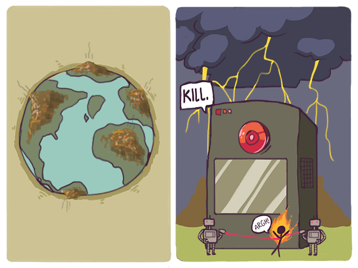

Breaking Smart
The first sustainable socioeconomic order of the networked world is just beginning to emerge, and the experience of being part of a system that is growing smarter at an exponential rate is deeply unsettling to pastoralists and immensely exciting to Prometheans.

Our geographic-world intuitions and our experience of the authoritarian institutions of the twentieth century lead us to expect that any larger system we are part of will either plateau into some sort of impersonal, bureaucratic stupidity, or turn "evil" somehow and oppress us.
The first kind of apocalyptic expectation is at the heart of movies like Idiocracy and Wall-E, set in trashed futures inhabited by a degenerate humanity that has irreversibly destroyed nature.
The second kind is the fear behind the idea of the Singularity: the rise of a self-improving systemic intelligence that might oppress us. Popular literal-minded misunderstandings of the concept, rooted in digital dualism, result in movies such as Terminator. These replace the fundamental humans-against-nature conflict of the geographic world with an imagined humans-against-machines conflict of the future. As a result, believers in such dualist singularities, rather ironically for extreme technologists, are reduced to fearfully awaiting the arrival of a God-like intelligence with fingers crossed, hoping it will be benevolent.
Both fears are little more than technological obscurantism. They are motivated by a yearning for the comforting certainties of the geographic world, with its clear boundaries, cohesive identities, and idealized heavens and hells.
Neither is a meaningful fear. The networked world blurs the distinction between wealth and waste. This undermines the first fear. The serendipity of the networked world depends on free people, ideas and capabilities combining in unexpected ways: "Skynet" cannot be smarter than humans unless the humans within it are free. This undermines the second fear.
To the extent that these fears are justified at all, they reflect the terminal trajectory of the geographic world, not the early trajectory of the networked world.
An observation due to Arthur C. Clarke offers a way to understand this second trajectory: any sufficiently advanced technology is indistinguishable from magic. The networked world evolves so rapidly through innovation, it seems like a frontier of endless magic.
Clarke's observation has inspired a number of snowclones that shed further light on where we might be headed. The first, due to Bruce Sterling, is that any sufficiently advanced civilization is indistinguishable from its own garbage. The second, due to futurist Karl Schroeder,1 is that any sufficiently advanced civilization is indistinguishable from nature.
To these we can add one from social media theorist Seb Paquet, which captures the moral we drew from our Tale of Two Computers: any sufficiently advanced kind of work is indistinguishable from play.
Putting these ideas together, we are messily slouching towards a non-pastoral utopia on an asymptotic trajectory where reality gradually blurs into magic, waste into wealth, technology into nature and work into play. `
This is a world that is breaking smart, with Promethean vigor, from its own past, like the precocious teenagers who are leading the charge. In broad strokes, this is what we mean by software eating the world.
For Prometheans, the challenge is to explore how to navigate and live in this world. A growing non-geographic-dualist understanding of it is leading to a network culture view of the human condition. If the networked world is a planet-sized distributed computer, network culture is its operating system.
Our task is like Deep Thought's task when it began constructing its own successor: to develop an appreciation for the "merest operational parameters" of the new planet-sized computer to which we are migrating all our civilizational software and data.
[1] Karl Schroeder, The Deepening Paradox, 2011.